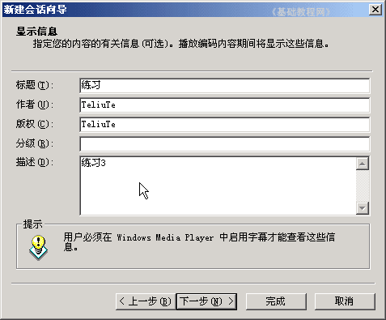

视频编辑 基础入门教程
四、录制视频3 返回目录
在上一课中，我们学习了用WinXP自带的Windows Movie Maker录制软件，它在编辑上也很有用处，只是必须在XP以上的操作系统才行，这一课我们来学习使用Windows Media Encoder录制；
1、启动视频软件
1）这个软件可以运行在Win2000系统上，可以在微软的更新下载页面下载，然后安装即可；
2）安装完成后，点“开始－所有程序－Windows Media－Windows Media 编码器”，启动编码器，出来一个“新建会话”面板；

3）在面板上面点中间的“捕获音频或视频”，点“确定”继续；
4）接下来是选择设备，这儿用默认的即可，声音也是打勾选中的，点“下一步”继续；
5）接下来的文件名输入“练习1”，右边的浏览点一下，选择“我的文档－我的视频”，跟上次的存一块儿，
点“下一步”继续，出来提示对话框点“确定”；
6）接下来的如何分发，直接点“下一步”，这儿采用第一个流式处理；
7）接下来是压缩比设置，在中间找到340点击选中，去掉原来的282，质量调高一些；

8）接下来是文件信息，将会出现在播放器的状态栏里面，按照顺序填写一下，然后点“下一步”继续；

9）这时候出来一个完成面板，里面显示了前面的设置情况，点“完成”按钮，
旁边有个“单击完成后开始捕获”，勾上可以直接录制；
2、录制视频文件
1）回到程序窗口后，中间会出来一个预览的图像，在工具栏上找到绿色的“开始编码”按钮，点击后即可开始录制；
2）录制到时间后，点工具栏上红色的“停止”按钮，就可以停止录制，同时出来一个结果对话框，点“关闭”按钮，完成录制；
3）这时候到“我的视频”文件夹中就可以找到刚才录制的视频文件，点“文件－保存”命令，以“练习1”为文件名保存一下这个配置文件；
本节学习了用Windows Media Encoder录制视频文件的基本方法，如果你成功地完成了练习，请继续学习下一课内容；
本教程由86团学校TeliuTe制作|著作权所有
基础教程网：http://teliute.org/
美丽的校园……
转载和引用本站内容，请保留版权信息和本站链接。